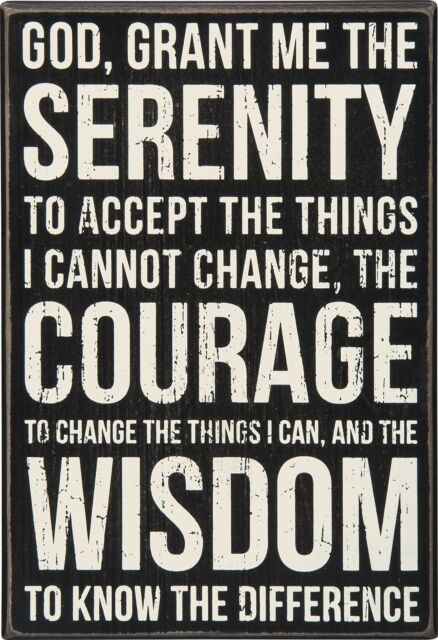

(don't read this part out loud)
Always be prepared to unmute yourself if host is forced to mute all attendeesAsk for volunteers for readings, record the names somehow (write them down, type into chat)
Who is an Addict: Margaret
Why are we Here: Riley
We Do Recover: Leeanne
How it Works: Linda
Twelve Traditions: Paul
Just for Today: Jason
Welcome to the [6AM | 9AM | Noon | 6PM] Los Gatos Home Group meeting of Narcotics Anonymous.
My name is ______, I'm an addict from _______ and the present secretary for this meeting.
Please mute your line except when you are sharing. You can find the mute button on the zoom app on your phone or in your browser.
After a moment of silence, those who wish may join us in the Serenity Prayer.
NA is a nonprofit fellowship or society of men and women for whom drugs had become a major problem. We are recovering addicts who meet regularly to help each other stay clean. This is a program of complete abstinence from all drugs. There is only one requirement for membership, the desire to stop using. We suggest that you keep an open mind and give yourself a break. Our program is a set of principles written so simply that we can follow them in our daily lives. The most important thing about them is that they work.
There are no strings attached to N.A. We are not affiliated with any other organizations, we have no initiation fees or dues, no pledges to sign, no promises to make to anyone. We are not connected with any political, religious, or law enforcement groups, and are under no surveillance at any time. Anyone may join us, regardless of age, race, sexual identity, creed, religion or lack of religion.
We are not interested in what or how much you used, who your connections were, what you have done in the past, how much or how little you have, but only in what you want to do about your problem and how we can help. The newcomer is the most important person at any meeting, because we can only keep what we have by giving it away. We have learned from our group experience that those who keep coming to our meetings regularly stay clean.
Is there anyone in their first 30 days who would like to introduce themselves by their first name and where you're calling from? This is not to embarrass you, just so we may get to know you better. Please raise your hand in Zoom and I will call on you.(Write down names)
(Ask previously assigned volunteers to read - ask by name)
I have asked NAME to read Who Is an Addict
I have asked NAME to read Why Are We Here
I have asked NAME to read We Do Recover
I have asked NAME to read How It Works
I have asked NAME to read The Twelve Traditions
Thank you everyone for reading
An excerpt from our fourth tradition states, "It is also important to consider how we're viewed by society. When N.A. meetings first began in many places, it was illegal for addicts to meet under any circumstances. Even where meetings are legal, the public often views groups of addicts with alarm. Until N.A. has established a good public reputation, it may be difficult for addicts to find meeting places. If our behavior as N.A. members is still destructive and selfish, we will once again have difficulty meeting openly. We help protect our reputation as a fellowship when we use our meeting facilities with respect, keeping them clean and in good repair. We should take care to act like good neighbors, conducting ourselves respectfully. If the public reputation of Narcotics Anonymous is somehow impaired, addicts may die."
If you have celebrated a recovery milestone in the last week, please introduce yourself by name, your location, and your clean date. Please raise your hand in Zoom and I will call on you. (Listen for names)
[Revolving format]
This is a one-hour revolving format meeting. A volunteer will read a piece of NA literature of their choice, will share for 10-15 minutes, and then the meeting will be opened for volunteers to share.
[JFT]
This is a one-hour Just for Today meeting. A volunteer will read
today's Just for Today, share for 10-15 minutes, and then the
meeting will be opened for volunteers to share. May I please have a
volunteer come up and read Just for Today
[Step/Tradition Study]
This is a one-hour Step/Tradition study meeting. The group will read this week's
step or tradition, and then the meeting will be opened for
volunteers to share.
[Book Study]
This is a one-hour book study meeting. The group will read a section from
a selected piece of NA literature, after which we'll open the meeting up for sharing.
If you would like to read please raise your hand in Zoom. Tonight our reading is from Living Clean, starting on page 189, "Getting Out of Our Own Way."
[Tag Topic Meeting]
This is a tag topic meeting: I [secretary] will pick a person and a
topic for them to share on and then that person will pick a new person
and a new topic for that person to share on.
[Spiritual Principle Tag Meeting] This is a spiritual principle tag meeting: I [secretary] have a list of 100 unique spiritual principles. I [secretary] will select the first person and first principle to start the meeting. Afterwards, those that share will select a person and a number 1-100. The spiritual principle associated to that number will be read and the new speaker will share on that principle.
[Speaker Discussion]
This is a one-hour speaker/discussion meeting. The speaker will share for 10 to 15 minutes. Tonight our chairperson is ___________________.
We are not currently practicing our 7th tradition during this meeting. However we encourage you donate directly to Narcotics Anonymous World Services. A link is available on the na-in-place website.
If you have an attendance sheet that needs to be validated, send a private text to the moderator [JohnW] with your name and email address. You will receive the validation by email.
At this meeting, only one person speaks at a time. We do not engage in dialog or debate. # If you have used in the last 24 hours, please refrain from speaking at meeting level and someone like myself will be glad to speak with you after the meeting.
Please limit your share to three minutes to allow as many people as possible a chance to share. After three minutes you will hear a chime (PAUSE HERE FOR CHIME) at which time please wrap up your share.
In closing, here are some suggestions that work for us:
Thank the chairperson; welcome the newcomers and visitors by name
May I have a volunteer read Just for Today?
Close with the Third Step Prayer.

Thanks everyone. We will keep the line open for 15 minutes for fellowship.